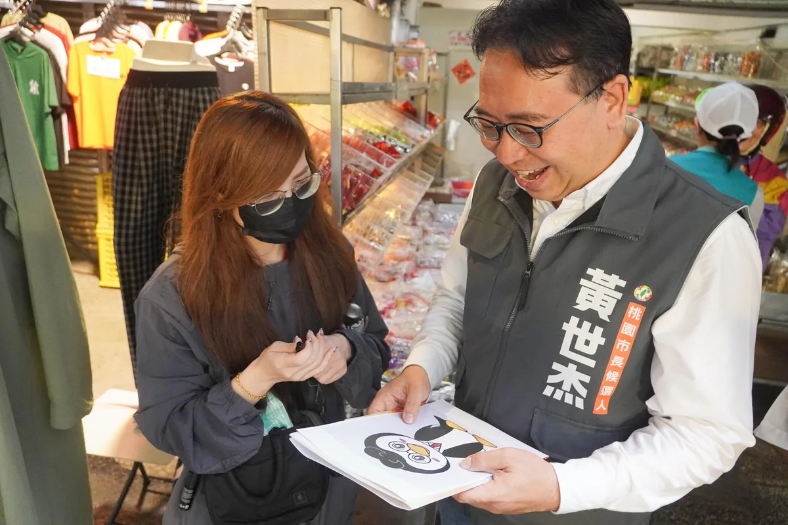

陳亭妃chen_tingfei

@chen_tingfei:謝謝幸妤的支持，我會好好珍惜這一份支持，為台南繼續打拼。 我也要替幸妤加油！我也替幸妤感到非常驕傲，可以栽培出三個非常優秀的寶貝，最難得的是幸妤可以保有永遠的真性情，永遠做自己喜歡做的事。
Posts
@chen_tingfei:謝謝幸妤的支持，我會好好珍惜這一份支持，為台南繼續打拼。 我也要替幸妤加油！我也替幸妤感到非常驕傲，可以栽培出三個非常優秀的寶貝，最難得的是幸妤可以保有永遠的真性情，永遠做自己喜歡做的事。

@schuanglawyer:今晚的南崁溪畔水燈點點，映照著整座城市百年來的虔誠與慈悲。 世杰傍晚來到景福宮參拜祈福，沿路向市民朋友致意。遶境的尾聲，我也來到溪畔，跟大家一起把水燈放入溪流，祈願四方平安、風調雨順。 景福宮和福德宮的中元慶典，傳承超過一世紀，水燈排遶境與放水燈，早已超越慰藉孤魂、慈悲普渡的傳統意涵，而是代代相傳，凝聚桃園十五街庄跟各大姓氏宗親的情感記憶。 現在的桃園，是擁有235萬人的大城，人口規模即將超越首都台北。在城市大步向前、推動各項建設的同時，世杰會更用心守護在地文化底蘊，顧好我們的根，讓桃園成為一座進步、繁榮又有歷史溫度的宜居之城。

@schuanglawyer:來到公園，親自挑戰看看🤣從孩子的角度出發，更能了解孩子需要什麼！ 身為爸爸，我時常陪著孩子到公園玩。我已簽下「兒童遊戲空間政策承諾書」，未來要讓桃園的公園更好玩，也更適合孩子活動、探索與成長。 ✅打造青少年戶外遊憩空間：正視12歲以上青少年的需求，規劃適合的活動空間！ ✅打造10分鐘遊戲圈：讓每個生活圈，都有孩子可以自在玩耍的遊戲空間！ ✅打造涼感公園：增加遮蔭、降溫與戲水設施，夏天也能舒服玩！ 努力把桃園打造成真正的遊戲宜居城市！心桃園，玩起來💖

@schuanglawyer:一早來到內壢市場！很多鄉親特地來等待，世杰跟團隊從市場一路走進街區，收到好多鼓勵跟打氣💪🏻我要特別感謝內壢福海宮劉守榮主委，昨晚不幸遇到車禍，今天依然堅持到場相挺，真的很感動，祝福主委早日康復。 大內壢居民超過十萬，人口持續成長。今天有不少市民跟攤商跟我反映，新華街路面多年沒有重新刨鋪，內壢國小通學廊道完成後，這一帶停車空間缺乏的問題，依然沒有一併改善。大家期待逛市場的感受更好，期待整體生活環境可以同步升級！ 這些看似日常的小事，其實都是居民每天生活最直接的感受。 未來鐵路地下化，沿線將會釋出更多公共空間。世杰上任後，會全面盤點居民需求，規劃地方期待已久的公有市場，改善公有空間雍塞跟不足的問題。同時也要積極協助鐵路地下化，讓工程如期如質完成。 感謝謝內壢市場的熱情，大家送上柿子、粽子、白蘿蔔，祝福世杰「事事如意、好事接粽來、好彩頭」，滿滿心意我都收到了！ 人口在成長，建設不能慢下來。我一定會全力以赴，讓內壢生活更便利、發展更順暢！心內壢，動起來💖


楠仔坑運動中心正式開幕！大家一起動起來🏊


上次沒走完的 雙城街夜市 今天回來續攤！ ⠀ 本來以為我什麼都簽過了 結果今天繼續解鎖 PS5 30週年紀念版！ ⠀ 當然我非常敬業地說 這是一台空氣清淨機 ⠀ 掃完看到大家排隊 我還想說 在排什麼吃的 結果是要合照 我還走過頭 笑死
明天早上8:30，動起來！內壢市場掃街✨ 內壢市場品項非常齊全，從農產品、漁獲、生鮮肉品到百貨雜貨，幾乎一站就能滿足家庭日常所需。更是許多在地人熟悉的銅板美食聚集地，藏著不少傳承多代的在地小吃，香傳三代油飯、無名手工蛋餅、古早味碗粿、手工魚丸湯、現做潤餅捲，都是內壢市場裡的熟悉好味道😋 歡迎大家推薦周邊美食！！！明早8:30內壢市場見！心內壢，動起來💖

@schuanglawyer:讓桃園不只有特色公園，一起走向遊戲城市！讓孩子看到新未來✨ 愈來愈多年輕人選擇在桃園成家，好多孩子在這裡出生、成長。 我有一個三歲孩子，每次陪他去公園，深刻體會孩子需要的不只是「多幾座遊具」，而是友善、共融且安全的空間。讓所有的孩子都能自在玩耍，也讓家長安心陪伴。 我跟特公盟來到光明公園，2021文燦市長任內啟動改造後，這裡真的不一樣了。從幼兒、兒童到青少年，都有適合自己的空間。聽著滿場孩子的笑聲，47歲的我也忍不住想一起玩！ 孩子的需求不斷改變，城市治理更要有前瞻性。市府必須提前思考下一代需求，延續特色公園基礎，讓公園不只是遊戲場，成為每個人的生活空間。 我是黃世杰，我已經簽下特公盟兒童遊戲空間政策承諾書，未來我要打造「遊戲宜居心城市」： 🔈打造青少年戶外遊憩空間 正視青少年需求，規劃更多適合青少年的戶外遊憩空間 🔈打造10分鐘遊戲圈 盤點各區遊戲空間，讓孩子步行10分鐘就有遊戲場 🔈打造涼感公園 盤點公園及遊戲場遮蔭條件，讓遊戲場降溫，保障孩子的遊戲安全 簽下承諾，就是扛起下一代的責任。讓我們把桃園打造成走出家門就能自在探索、快樂成長的遊戲城市！心桃園，玩起來💖

阿純盲測辣椒醬！竟然「全！部！猜！對！」🌶️

🎈藝啟動一動 親子歡樂城🎈 ＃潭子站 8/29（六）早上9點，帶著孩子們一起出門放電吧！地點就在 #潭水亭觀音媽廟（潭子區復興路二段89號）！現場不只準備滑步車體驗、充氣城堡，還有市集和精彩舞台表演，讓大小朋友一起度過熱鬧又有趣的午後。 活動免費入場！也歡迎帶上野餐墊，和孩子一起輕鬆看表演。 🎁 提前報名還可領取限量精美小禮物，數量有限，記得搶先報名！ 報名網址： https://www.beclass.com/rid=30527d56a87c9b4dcfe4 #藝啟動一動 #親子歡樂城 #臺中啟程 #打造旗艦城

謝謝幸妤的支持，我會好好珍惜這一份支持，為台南繼續打拼。 我也要替幸妤加油！我也覺得幸妤非常驕傲，可以栽培出三個非常優秀的寶貝，最難得的是幸妤可以保有永遠的真性情，永遠做自己喜歡做的事。


百年信仰延續，為高雄祈福 連日豪大雨影響高雄，近期天候仍不穩定。今天來到小港龍湖宮，參與大士爺開光點眼儀式，與地方鄉親一同誠心上香祈福。 祈求風雨早歇、合境平安，也祝福今年大士爺普渡祭典圓滿順利，市民朋友一切順心。 黃彥毓 前鎮小港 我願意 吳銘賜Wu Ming-tsz 市議員李順進 陳致中 Chih-Chung Chen 黃敬雅 Huang Ching-Ya 吳昱鋒-鎮港小前鋒

來到公園，親自挑戰看看🤣從孩子的角度出發，更能了解孩子需要什麼！ 身為爸爸，我時常陪著孩子到公園玩。我已簽下「兒童遊戲空間政策承諾書」，未來要讓桃園的公園更好玩，也更適合孩子活動、探索與成長。 ✅打造青少年戶外遊憩空間：正視12歲以上青少年的需求，規劃適合的活動空間！ ✅打造10分鐘遊戲圈：讓每個生活圈，都有孩子可以自在玩耍的遊戲空間！ ✅打造涼感公園：增加遮蔭、降溫與戲水設施，夏天也能舒服玩！ 努力把桃園打造成真正的遊戲宜居城市！心桃園，玩起來💖

一早來到內壢市場！很多鄉親特地來等待，世杰跟團隊從市場一路走進街區，收到好多鼓勵跟打氣💪🏻我要特別感謝內壢福海宮劉守榮主委，昨晚不幸遇到車禍，今天依然堅持到場相挺，真的很感動，祝福主委早日康復。 大內壢居民超過十萬，人口持續成長。今天有不少市民跟攤商跟我反映，新華街路面多年沒有重新刨鋪，內壢國小通學廊道完成後，這一帶停車空間缺乏的問題，依然沒有一併改善。大家期待逛市場的感受更好，期待整體生活環境可以同步升級！ 這些看似日常的小事，其實都是居民每天生活最直接的感受。 未來鐵路地下化，沿線將會釋出更多公共空間。世杰上任後，會全面盤點居民需求，規劃地方期待已久的公有市場，改善公有空間雍塞跟不足的問題。同時也要積極協助鐵路地下化，讓工程如期如質完成。 感謝競總主委范振修資政、張曉昀議員 @vina.lovezhongli 、黃崇真議員 @cchuang_0223 、彭俊豪議員 @c_peng 、魏筠議員 @weiyunin ，以及內壢福海宮劉守榮主委、黃國棟委員、林琦彬委員同行。 感謝謝內壢市場的熱情，大家送上柿子、粽子、白蘿蔔，祝福世杰「事事如意、好事接粽來、好彩頭」，滿滿心意我都收到了！ 人口在成長，建設不能慢下來。我一定會全力以赴，讓內壢生活更便利、發展更順暢！心內壢，動起來💖

@hammer__lee:我不太會講故事，但有人替我記了 27 年。 那天在萬里，一位李女士全程舉著「川伯加油」的牌子。我問她，怎麼每一場都到。 她說，921 大地震後開始重建的那一年，我在台北縣服務，她的家是在那段時間重新蓋起來的。 從泰山騎到汐止，再從汐止騎到萬里。整整跨了三個區，只為了當面講那四個字。 說實在，我相當地感動。 做工程的人，習慣把事情做完，又開始下一件事。橋接起來、路鋪平了，通常不會有人記得那天是誰站在現場。 但她記得。 年底如果有機會回到新北，我會用一樣的方法——一件一件，把市民的問題處理掉。 說實在，我還是不太會講故事。該做的事，我做給大家看。


@pumashen:上次沒走完的 雙城街夜市 今天回來續攤！ ⠀ 本來以為我什麼都簽過了 結果今天繼續解鎖 PS5 30週年紀念版！ ⠀ 當然我非常敬業地說 這是一台空氣清淨機 ⠀ 掃完看到大家排隊 我還想說 在排什麼吃的 結果是要合照 我還走過頭 笑死

一早來到熟悉的埔心市場，雖然下著雨，攤商和鄉親朋友依然非常熱情🔥有支持者特地帶著昨天才公布的「企鵝阿爸」來找我拍照，以及邀請我在新招牌上簽名的店家，還有送上蒜苗、蘿蔔、粽子、發糕、刈包，滿滿好彩頭的市民朋友，一路給我滿滿的鼓勵！ 埔心地區人口快速成長、新社區住宅林立，生活機能也必須跟上。從道路交通、大眾運輸、人行安全，到公園綠地、社福設施，都需要更完整的規劃。埔心市場更是在地重要的採買中心與民生廚房，未來市場及周邊用地如何發展，市府應該積極和攤商、居民溝通，兼顧生計與生活品質。 楊梅的發展不能再等，這三年多來，包括幼擴二期、龍科三期、台積電進駐等重大產業發展，都需要更大力推進。桃園要加速產業升級、創造更多工作機會，地方不能再原地踏步。 感謝競總主委范振修資政、鄭淑方議員 @fangfang4826081 、項柏翰議員候選人 @bigelephant.bro 、埔心里張仁森里長、楊梅區黃姓宗親會黃麒浚會長同行。 楊梅、埔心需要衝刺的建設，讓世杰一項項來打造。心楊梅，動起來💖

讓桃園不只有特色公園，一起走向遊戲城市！讓孩子看到新未來✨ 愈來愈多年輕人選擇在桃園成家，愈來愈多孩子在這裡出生、成長。 我有一個三歲的孩子，每次陪他去公園，深刻體會孩子需要的不只是「多幾座遊具」，而是友善、共融且安全的空間。讓不同年齡、不同能力的孩子都能自在玩耍，也讓家長安心陪伴。 世杰和 魏筠議員、 黃崇真 Huang Chung-Chen議員、 彭俊豪議員來到光明公園。2021年文燦市長任內啟動改造後，這裡真的不一樣了。從幼兒、兒童到青少年，都能找到適合自己的空間。聽著滿場孩子的笑聲，47歲的我也忍不住想一起玩！ 孩子的需求不斷改變，城市治理更要有前瞻性。市府必須提前思考下一代的需要，延續特色公園的基礎，讓公園不只是遊戲場，成為每個人的生活空間。 我是黃世杰，我已經簽下特公盟兒童遊戲空間政策承諾書，未來我要打造「遊戲宜居心城市」： 🔈打造青少年戶外遊憩空間 正視青少年需求，規劃更多適合青少年的戶外遊憩空間 🔈打造10分鐘遊戲圈 盤點各行政區遊戲空間，讓孩子步行10分鐘就有遊戲場 🔈打造涼感公園 盤點公園及遊戲場遮蔭條件，讓遊戲場降溫，保障孩子的遊戲安全 簽下承諾，就是扛起下一代的責任。讓我們一起把桃園打造成走出家門就能自在探索、快樂成長的遊戲城市！心桃園，玩起來💖
國際油價上漲！持續專案平穩 中油公布8/24-8/30汽、柴油價格維持不調整 〈 國際油價上漲！持續專案平穩 中油公布8/24-8/30汽、柴油價格維持不調整 〉本文來自於《 龍傳媒新聞 iNews Long 》。 台灣中油公司（8／22）日宣布，自下週一(24日)凌晨零時起至8月30日晚上12時止，汽、柴油價格維持...

🎈藝啟動一動 親子歡樂城🎈 ＃潭子站 8/29（六）早上9點，帶著孩子們一起出門放電吧！地點就在 #潭水亭觀音媽廟（潭子區復興路二段89號）！現場不只準備滑步車體驗、充氣城堡，還有市集和精彩舞台表演，讓大小朋友一起度過熱鬧又有趣的午後。 活動免費入場！也歡迎帶上野餐墊，和孩子一起輕鬆看表演。 🎁 提前報名還可領取限量精美小禮物，數量有限，記得搶先報名！ 報名網址： https://www.beclass.com/rid=30527d56a87c9b4dcfe4 #藝啟動一動 #親子歡樂城 #臺中啟程 #打造旗艦城

Responding to User Complaints: Air Raid Drill Mobile Network Outage... Can Telecom Companies Prov...
無菸城市我支持 但無菸城市需要的是配套 不是把有吸菸需求的市民 用柵欄圍在路口 ⠀ 大家批評了幾個月 市府不說明、不檢討 今天，默默把柵欄拆了 ⠀ 以前，問A答B； 現在，問A拆A。 難怪垃圾桶也會不見 ⠀ 繞了一大圈 其實就該回頭檢討 為何一開始都沒有想好 ⠀ 七百多萬的陽傘 層出不窮的兒虐 到今天的「柵欄城市」 都已經是跨黨派的質疑 蔣市府卻依然故我 民怨炸鍋了才要改？ ⠀ 台北人的金錢與時間 可以一直被這樣浪費嗎

來到公園，親自挑戰看看🤣從孩子的角度出發，更能了解孩子需要什麼！ 身為爸爸，我時常陪著孩子到公園玩。我已簽下「兒童遊戲空間政策承諾書」，未來要讓桃園的公園更好玩，也更適合孩子活動、探索與成長。 ✅打造青少年戶外遊憩空間：正視12歲以上青少年的需求，規劃適合的活動空間！ ✅打造10分鐘遊戲圈：讓每個生活圈，都有孩子可以自在玩耍的遊戲空間！ ✅打造涼感公園：增加遮蔭、降溫與戲水設施，夏天也能舒服玩！ 努力把桃園打造成真正的遊戲宜居城市！心桃園，玩起來💖

一早來到內壢市場！很多鄉親特地來等待，世杰跟團隊從市場一路走進街區，收到好多鼓勵跟打氣💪🏻我要特別感謝內壢福海宮劉守榮主委，昨晚不幸遇到車禍，今天依然堅持到場相挺，真的很感動，祝福主委早日康復。 大內壢居民超過十萬，人口持續成長。今天有不少市民跟攤商跟我反映，新華街路面多年沒有重新刨鋪，內壢國小通學廊道完成後，這一帶停車空間缺乏的問題，依然沒有一併改善。大家期待逛市場的感受更好，期待整體生活環境可以同步升級！ 這些看似日常的小事，其實都是居民每天生活最直接的感受。 未來鐵路地下化，沿線將會釋出更多公共空間。世杰上任後，會全面盤點居民需求，規劃地方期待已久的公有市場，改善公有空間雍塞跟不足的問題。同時也要積極協助鐵路地下化，讓工程如期如質完成。 感謝競總主委范振修資政、張曉昀議員、黃崇真 Huang Chung-Chen議員、彭俊豪議員、魏筠議員，以及內壢福海宮劉守榮主委、黃國棟委員、林琦彬委員同行。 感謝內壢市場的熱情，大家送上柿子、粽子、白蘿蔔，祝福世杰「事事如意、好事接粽來、好彩頭」，滿滿心意我都收到了！ 人口在成長，建設不能慢下來。我一定會全力以赴，讓內壢生活更便利、發展更順暢！心內壢，動起來💖

何欣純提「雙十生活圈」 打造 10 分鐘綠蔭、遊戲圈 台中市長候選人、立法委員何欣純與還我特色 […] 〈 何欣純提「雙十生活圈」 打造 10 分鐘綠蔭、遊戲圈 〉這篇文章最早發佈於《 何欣純官方網站｜2026 台中市長候選人 》。
何欣純推「台中版寵物券」 500 元加碼毛孩 5 大安心 台中市長候選人、立法委員何欣純今（25） […] 〈 何欣純推「台中版寵物券」 500 元加碼毛孩 5 大安心 〉這篇文章最早發佈於《 何欣純官方網站｜2026 台中市長候選人 》。

讓桃園不只有特色公園，一起走向遊戲城市！讓孩子看到新未來✨ 愈來愈多年輕人選擇在桃園成家，愈來愈多孩子在這裡出生、成長。 我有一個三歲的孩子，每次陪他去公園，深刻體會孩子需要的不只是「多幾座遊具」，而是友善、共融且安全的空間。讓不同年齡、不同能力的孩子都能自在玩耍，也讓家長安心陪伴。 世杰和魏筠議員 @weiyunin 、黃崇真議員 @cchuang_0223 、彭俊豪議員 @c_peng 來到光明公園。2021年文燦市長任內啟動改造後，這裡真的不一樣了。從幼兒、兒童到青少年，都能找到適合自己的空間。聽著滿場孩子的笑聲，47歲的我也忍不住想一起玩！ 孩子的需求不斷改變，城市治理更要有前瞻性。市府必須提前思考下一代的需要，延續特色公園的基礎，讓公園不只是遊戲場，成為每個人的生活空間。 我是黃世杰，我已經簽下特公盟兒童遊戲空間政策承諾書，未來我要打造「遊戲宜居心城市」： 🔈打造青少年戶外遊憩空間 正視青少年需求，規劃更多適合青少年的戶外遊憩空間 🔈打造10分鐘遊戲圈 盤點各行政區遊戲空間，讓孩子步行10分鐘就有遊戲場 🔈打造涼感公園 盤點公園及遊戲場遮蔭條件，讓遊戲場降溫，保障孩子的遊戲安全 簽下承諾，就是扛起下一代的責任。讓我們一起把桃園打造成走出家門就能自在探索、快樂成長的遊戲城市！心桃園，玩起來💖

麵線拉得越長，對我來說，是代表新北幸福綿延不絕。 拿鐵錘的遇上掌勺的，同樣四十多年的經歷，我們一起煮，成就的是一碗新北人情味，一道城市佳餚。 「豬腳麵線」一道屬於台灣的料理，其實很厚工，我今天第一次知道，蔥要炸、麵線要蒸，要滷好幾個小時，才有那一口美味。 今天我換上廚師服，在王永宗「阿宗師」主廚的教導下，當一日的總鋪師，做著他的拿手菜，說實在，都是他在打pass，才有這樣的成果，揪歹勢啦。 術業有專攻，一切不容易，事事不簡單。 如何讓「老菜」有「新意」，讓年輕人願意學，將台灣招牌菜傳承下去，是我們這個時代的責任。 台菜、辦桌文化，在我們的日常裡，是一路以來生活的記憶，其實我在跑攤的時候，看到好多年輕人，都愛吃流水席，這是台灣人懂的，也是發揚世界的。 未來我會結合推廣農漁特產，讓新北的特色好味道，讓更多人看見。 端上桌的，是咱新北人的寶貝。

台南明（8/24）日再度停止上班、停止上課。 連日豪雨，台南多處積淹水，接下來仍可能有大雨、局部豪雨及短延時強降雨。 提醒大家，明天如果非必要請盡量避免外出，遠離積淹水及危險區域，也請大家做好防雨、防淹水準備。 目前最重要的，就是守護大家的安全，也一起努力讓受災的家園盡快恢復。 天雨路滑，大家平安最重要！ #陳亭妃 #台南

工程方位我清清楚楚， 但排舞方向⋯我要再練練。